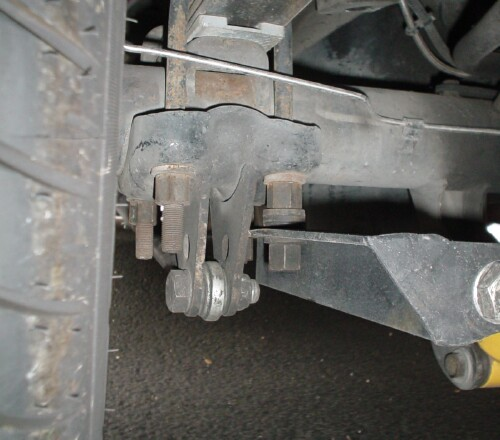

|
theory of operation: |
|
A panhard bar prevents the rear axle from moving side-to-side, which makes the handling more predictable, and it also allows for tuning of the rear roll center. Reports that the Lighting rear axle can move laterally an inch or more under hard cornering (especially with longer shackles) has been confirmed with video. Yet another Lightning owner installed Slide-A-Link traction bars, which are very tight to the outside of the frame rails, and experienced no rubbing, indicating that the axle did not move at all on his truck (see my leaf spring tech page for leaf bind as a possible explanation for this difference). At least one suspension guru has stated that a Hotchkiss drive does not need an axle location device. I suspect that this is not a declaration that one would not be effective, but rather pointing out that one of the engineering advantages for a passenger car to the Hotchkiss drive is that one is not required for normal use. |
|
There are two common devices used to control lateral displacement -- the Watts link and the panhard bar (also called a "track bar"). The Watts link is complicated, but keeps the axle totally centered at all suspension movements. The only kit that I know of that will fit our trucks is a weld-on kit from Totally Polished. They did not respond to my e-mails.
|
|
A panhard rod has the advantages of lighter weight and less complexity. A panhard should be as long as possible to minimize lateral displacement as the bar swings through its arc. The bar should also be level for the same reason. |
| The bar should also be as low as possible. An axle location device determines the rear roll center, which we want as low as possible (the generally accepted rule of thumb is a roll center at about 1" in the front and 12" in the rear). With a diff-mounted Watts Link, the roll center will be lowered to the center of the axle, about 14". But with a panhard, the roll center can be lowered even below the axle. |
|
But deflection in the leafs can raise the effective roll center back up a bit. There is nothing that can be done about this. The deflection in the leafs themselves can't be fixed. And leaf spring bushings, at least the front bushings, need to remain free to deflect to avoid suspension bind, so urethane or solid bushings are out of the question. |
|
some Lightning panhards: |
|
Both RUSlow (Stan Martin; see his forum at nloc.net) and
Develop Mental Racing (Garrett Gunther; see his forum at nhtoc.com) make panhard
kits for Lightnings. I ran the
RUSlow
panhard shown below for several years. Installation photos are
here.
Because of the need for a simple bolt-in system, they each have rods that should optimally be longer and lower. These over-the-diff panhards actually raise the rear roll center to about 21-22". Nonetheless, a Ruslow or DMR panhard is a noticeable improvement over stock, even with the Hotchkis leafs. |
|
The homemade setup below (owner unknown) was fabricated from standard issue circle track parts. It corrects the bar length issue, but does not lower the roll center.
|
| The panhard to the right was custom designed and fabricated by Paul Terry for his own truck. Although much more complex and heavy, the arc described by the longer bar means that the axle is forced to move less side-to-side as the axle travels up and down. This may or may not be a big deal, but hats off to Paul for making one on his own! I stole many of this design features for my new design. |
|
Craig Bearb built this from some
traction bars that he scrapped.
 It's long and low. Nicely done. Like Paul, Craig also used a cross-brace, which should have told me something. More on that below.
|
|
my design: |
|
I fabbed my new bar from scratch. I bought a used axle mount from a NASCAR team to get below the axle, and far enough out to clear the shocks. I'm shooting for a 12" roll center, but the bar will be adjustable from 10.5" to 14.5" on both the frame and axle ends. The axle mount is designed to bolt onto a 3" axle, so the collar had t be cut off, and the opening contoured for a 3.25" axle. I had it welded just under the spring plate. The brace on the axle mount is for a quick change racing diff, so it had to be removed. I fabbed a new axle brace from square steel stock. Nothing fancy. Most panhard parts are for link-type suspensions, so they are overbuilt on a leaf spring car. |
|
I fabbed the mount from 2.5" X .187 wall mild steel tubing and an Allstar circle track frame mounting bracket (part # 60168). The bracket is just bolted to the downtube.
I first tried it without a diagonal brace (not shown in the top photo), but the frame isn't strong enough, and just twists. So I had to fab a brace. In hindsight, I should have used a thinner wall material for the downtube to save a little weight. I fabbed the brace from a 30" swedged steel tube from Speedway Motors (part # 91034234), with a 3/4" bolt size rod end on the downtube side, and a 5/8" bolt size rod end on the frame side. The driver's side mounting bracket was fabbed from Ballistic Fabrication tabs and a piece of scrap steel for the base.
The bar was also surplus NASCAR part. I had to shorten it just a bit. I added a hex rod end tube adapter from Ballistic Fabrication to the cut end. Also shown is the super-high-strength F911 bolt (leftover from my tie rod project) and Ballistic Fabrication safety washer. The F911 bolt is the strongest available in resistance to shear, and the safety washer will prevent the rod from falling off if the joint fails. Neither are necessary. |